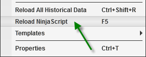
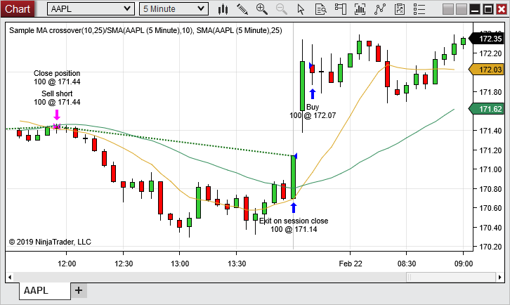
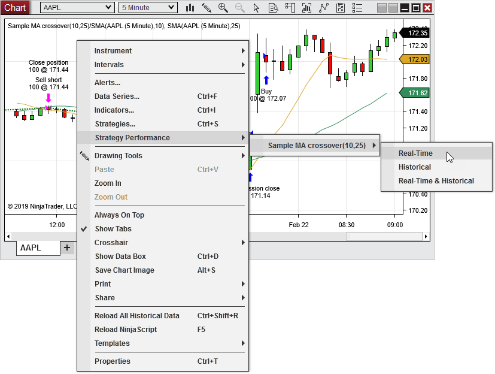
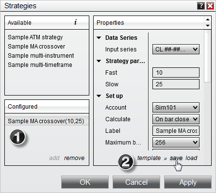
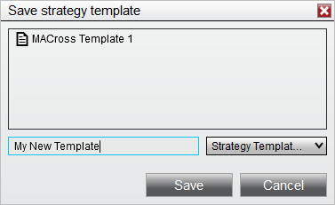

|
<< Click to Display Table of Contents >> Working with Automated Strategies |


|
Working with Automated Strategies
|
<< Click to Display Table of Contents >> Working with Automated Strategies |
|
Automated NinjaScript strategies can be enabled within an open chart. Both real-time and historical strategy trades will be displayed on the chart. For more information on creating and managing NinjaScript strategies, see the NinjaScript Overview page.
 Running a NinjaScript Strategy from a chart
Running a NinjaScript Strategy from a chart
Please see the Running a NinjaScript Strategy From a Chart page for more information on applying and enabling strategies from charts, as well as more information on managing strategy properties. |
 Working with automated strategies in a chart
Working with automated strategies in a chart
Strategy PersistenceAutomated strategies always persist on a chart whenever it is open, even if Enabled is set to false inside the chart's Strategies window. For example, if you shut down NinjaTrader with an enabled strategy in a chart, then reopen NinjaTrader, the strategy will still be applied to the chart with the property Enabled being set to false. This allows you to enable the strategy without having to reconfigure the parameters. However, when the chart containing the automated strategy is closed, the strategy will not persist; it will be disabled and removed.
Reloading NinjaScriptAn automated strategy can be reloaded by right mouse clicking in the chart and selecting the menu item Reload NinjaScript. Reloading an automated strategy will remove the existing instance of the strategy and add a new one in the chart.
 |
 Viewing automated strategy executions in a chart
Viewing automated strategy executions in a chart
ExecutionsAutomated strategy trade executions will be displayed in the chart, depending on the Plot Executions parameter of the Data Series. The chart below shows several executions from orders placed by an automated strategy, and each execution is labeled with an appropriate name. Only executions pertaining to the strategy on the chart will be visible when the strategy is enabled. Any manual executions, or executions from strategies not applied to the chart, will NOT be shown. Execution markers are configured for each Data Series by selecting the Plot Executions parameter from the Data Series window.

|
Strategy PerformanceReal-time, Historical, or Historical & Real-time executions for the automated strategy can be accessed within the open chart by right mouse clicking in the chart and selecting the menu item Strategy Performance, then hovering the mouse over the desired automated strategy and selecting the type of executions you wish to view from the menu that appears. A Performance window will appear where you can view and analyze the trade data.

The following categories of performance data can be selected:
|
 Understanding strategy templates
Understanding strategy templates
Each NinjaScript strategy's parameters can be saved as a template for later use, and multiple templates can be saved for each strategy. Once saved in a template, the customized parameters can be loaded quickly whenever the specified template is applied to an instance of the strategy for which it was created.
What is SavedAll parameter settings are saved, with the following exceptions:
•Account defaults to the Sim101 account •Enabled defaults to False
Saving Custom Strategy SettingsTo save custom NinjaScript strategy parameters as default:
1.Set parameters to desired values 2. Left mouse click on the template text located in the bottom right of the properties dialog. Selecting save will open the Save Strategy Template window, in which you can enter a name for a new template or overwrite an existing template.
If you wish to load a previously saved template, you can select the load option after left mouse clicking on the template text. If you change your settings and later wish to go back to the original settings, you can left mouse click on the template text and select the restore option.

1. In the image above, the "Sample MA Crossover" strategy is applied, as seen in the "Configured" section. 2. A new template can be saved for the selected by clicking the template text, then selecting save.

The Save Strategy Template window will allow you to name and save a new template for the configured strategy. |